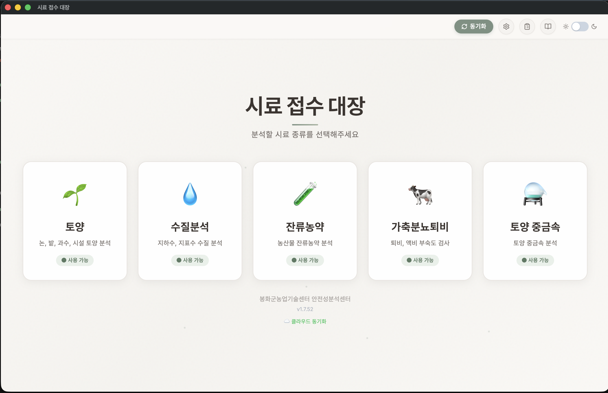
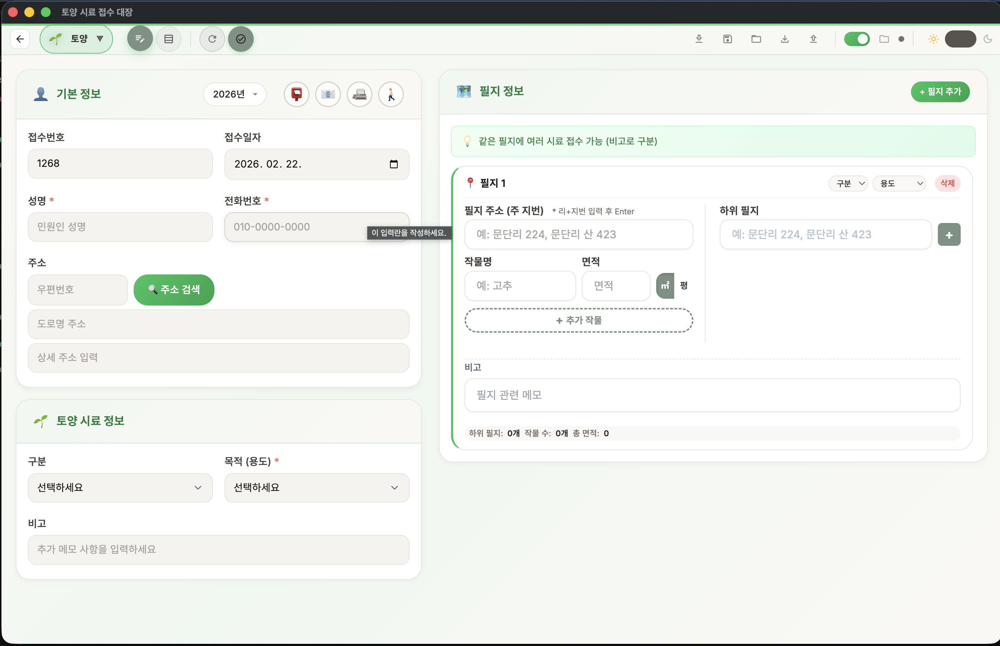
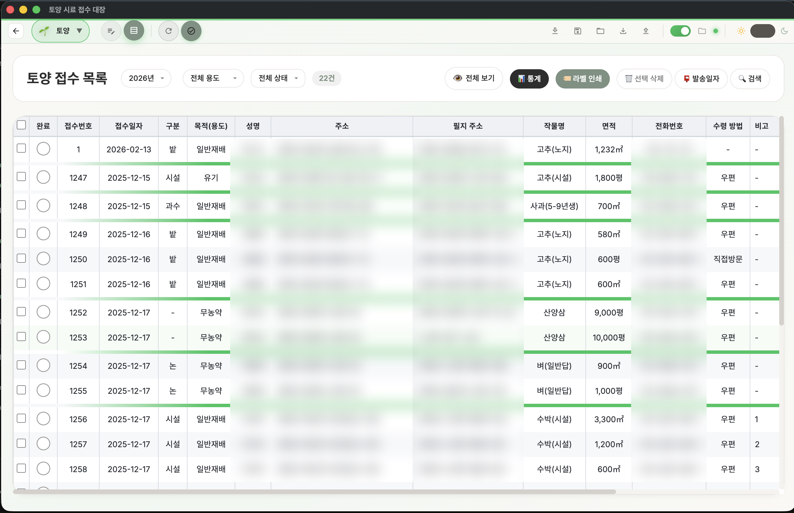
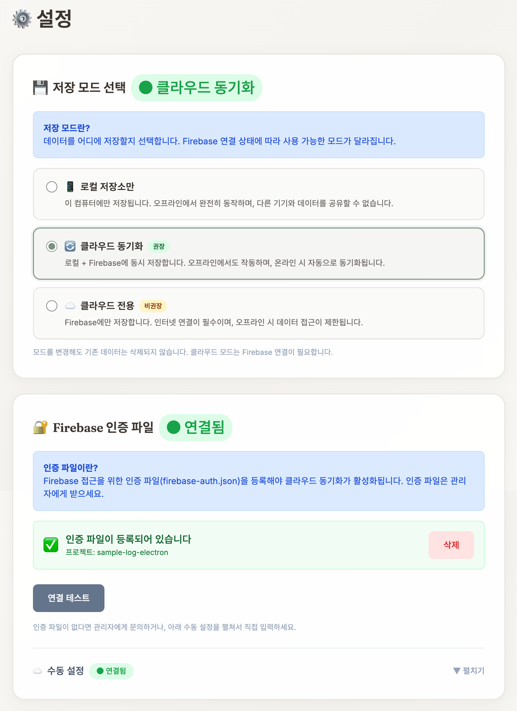
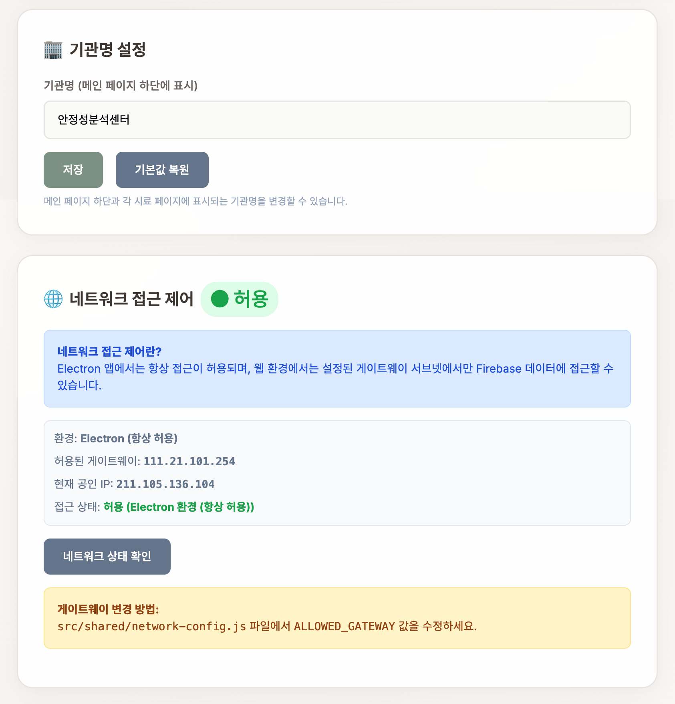
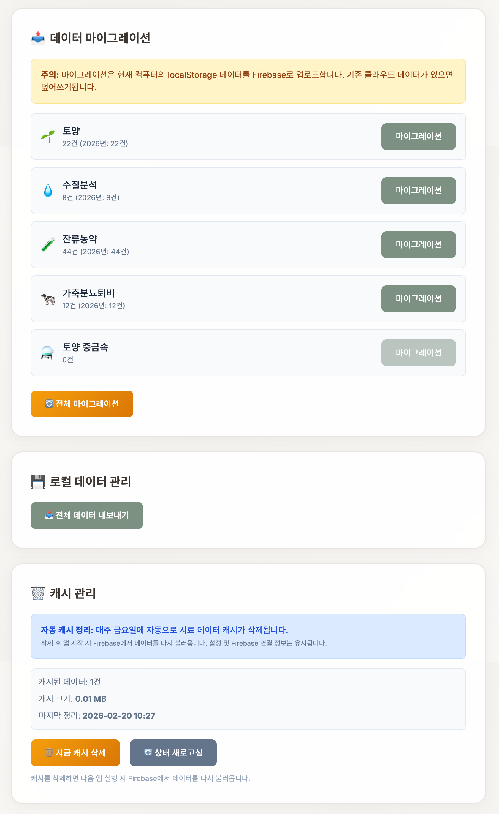

🏠 1. 시스템 소개
무엇인가요?
시료 접수 대장은 농업기술센터의 안전성분석 업무를 효율적으로 관리하는 디지털 시스템입니다. 종이 기반의 접수 대장을 전자화하여 시료 접수, 조회, 보관, 분석 등 전 과정을 손쉽게 관리할 수 있습니다.

주요 특징
📴 완전 오프라인 지원
인터넷 없이도 모든 기능 사용 가능
☁️ 클라우드 동기화
선택적 Firebase 연동으로 여러 PC에서 데이터 공유
🔒 데이터 암호화
AES-256-GCM 방식의 강력한 데이터 보호
📊 엑셀 호환
기존 엑셀 데이터 가져오기 및 내보내기 지원
🎨 현대적 UI/UX
밝은 모드와 어두운 모드 지원
🔍 스마트 검색
고급 필터링으로 필요한 데이터 빠르게 조회
💾 자동 백업
연도별 JSON 파일 자동 저장
🏷️ 라벨 인쇄
시료 라벨 직접 인쇄 지원
지원하는 시료 타입 (5가지)
| 시료 타입 | 설명 |
|---|---|
| 토양 | 논, 밭, 과수원, 시설재배 토양 분석 및 시비 처방 |
| 수질분석 | 지하수, 용수 수질 검사 |
| 잔류농약 | 농산물 잔류농약 검사 |
| 퇴/액비 | 가축분뇨 퇴비/액비 부숙도 검사 |
| 토양 중금속 | 토양 중금속 오염 검사 |
💻 2. 설치 및 시작하기
Windows 설치
설치 순서
- GitHub Releases 페이지에서 최신 버전의 .exe 파일 다운로드
- 설치 파일을 실행하고 설치 마법사 따라가기
- 설치 완료 후 바탕화면 바로가기를 통해 앱 실행
- 이후 자동 업데이트 지원
macOS 설치
설치 순서
- GitHub Releases 페이지에서 최신 버전의 .zip 파일 다운로드
- 파일 압축 해제
- Applications 폴더로 이동
- 애플리케이션 폴더에서 실행
웹 버전 사용
웹 브라우저에서 접속하여 바로 사용 가능합니다.
인터넷이 연결된 모든 환경에서 추가 설치 없이 사용할 수 있습니다.
첫 실행
앱을 실행하면 메인 화면이 나타납니다:
메인 화면 구성
- 상단 바 — 동기화, 설정, 릴리즈 노트, 사용설명서, 다크모드 토글 버튼
- 중앙 — 5개 시료 타입 카드
- 각 카드를 클릭하여 해당 시료 타입의 접수/조회 페이지로 이동
📝 3. 기본 사용법
시료 등록
등록 순서
- 메인 화면에서 원하는 시료 타입 카드 클릭
- 시료 정보 양식에 다음 항목 입력:
- 접수번호: 일련번호 자동 생성 (예: 1268)
- 신청인/의뢰인: 이름
- 주소: 지번 또는 도로명 주소 자동완성 지원
- 용도/목적: 드롭다운에서 선택
- 연락처, 생년월일 등 추가 정보
- 비고: 특이사항 기록
- 저장 버튼 클릭
- 시료 목록 테이블에 자동으로 추가됨

시료 조회 및 검색
기본 조회
등록된 시료들이 테이블로 표시됩니다. 페이지네이션 지원으로 기본 100개씩 표시됩니다.
검색 및 필터
검색 방법
- 검색 아이콘 클릭
- 원하는 검색 조건 입력:
- 키워드: 이름, 주소, 접수번호 등으로 검색
- 날짜 범위: 접수일자 범위 지정
- 기타 필터: 상태, 완료 여부 등
- 검색 결과 즉시 표시

시료 수정 및 삭제
수정
수정 순서
- 목록에서 시료 행 클릭
- 상세 정보 창에서 내용 수정
- 저장 버튼 클릭
삭제
삭제 순서
- 해당 시료 선택
- 삭제 버튼 클릭
- 확인 대화상자에서 삭제 진행
성명 클릭 일괄 선택
목록에서 성명을 클릭하면 같은 이름의 시료가 한꺼번에 선택됩니다. 한 의뢰인이 여러 건을 접수한 경우 빠르게 일괄 선택하여 삭제, 발송일자 입력, 라벨 인쇄 등을 할 수 있습니다.
엑셀 가져오기
기존 엑셀 데이터를 일괄 등록합니다:
가져오기 순서
- 서식 다운로드: 가져오기 버튼 → 서식 다운로드
- 데이터 준비: 엑셀 양식에 맞춰 기존 데이터 입력
- 파일 선택: 가져오기 버튼 → 파일 선택
- 컬럼 매핑: 각 엑셀 컬럼을 시료 필드에 매핑
- 가져오기 실행: 확인 버튼으로 일괄 등록
엑셀 내보내기
현재 데이터를 엑셀로 백업하거나 다른 용도로 활용합니다:
내보내기 순서
- 행 선택: 내보낼 시료 행 앞의 체크박스 선택 (다중 선택 가능)
- 내보내기 클릭: 내보내기 버튼
- 형식 선택: 표준 Excel 또는 암호화된 형식 선택
- 파일 저장: 자동으로
시료_연도.xlsx파일 다운로드
라벨 인쇄
메인 화면의 "라벨 인쇄" 카드를 클릭하면 독립된 라벨 인쇄 페이지가 열립니다:
라벨 인쇄 방법
- 엑셀 파일 업로드: 주소가 포함된 엑셀 파일을 드래그 앤 드롭하거나 "파일 선택" 버튼으로 업로드
- 데이터 미리보기: 업로드한 파일의 이름, 주소, 우편번호 데이터가 표로 표시
- 라벨 출력 설정: 프린텍(Printec) 라벨지 기준 템플릿과 필드 설정 (A4 라벨지 2열 9행, 18매 기준)
- 인쇄: 설정 확인 후 인쇄 실행 (최대 500행 지원)

ℹ️ 라벨 인쇄 팁
시료 목록 페이지에서도 "라벨 인쇄" 버튼으로 선택한 시료의 주소 라벨을 인쇄할 수 있습니다.
다크모드
야간 작업 시 눈이 덜 피로하도록, 상단 바의 해/달 아이콘을 클릭하여 밝은 모드/어두운 모드를 전환할 수 있습니다.
☁️ 4. Firebase 클라우드 설정
(선택사항)
Firebase란?
Google에서 제공하는 무료 클라우드 데이터베이스 서비스입니다. 시료 접수 대장에서는 다음 용도로 활용됩니다:
🖥️ 다중 PC 공유
여러 컴퓨터에서 동일한 데이터 실시간 공유
☁️ 자동 클라우드 백업
데이터가 Google 서버에 안전하게 저장
🔄 멀티탭 동기화
여러 탭에서 작업해도 자동 동기화
설정 단계 (비개발자용)
Step 1: Firebase 프로젝트 생성
- 웹브라우저에서 Firebase 콘솔 (
https://console.firebase.google.com/) 접속 - 상단 프로젝트 추가 클릭
- 프로젝트 이름 입력 (예: "우리기관-시료관리")
- 계속 → 사용 설정 클릭하여 프로젝트 생성
Step 2: Firestore 데이터베이스 활성화
- 왼쪽 메뉴 빌드 → Firestore Database 선택
- 데이터베이스 만들기 클릭
- 제작 모드 선택 (또는 테스트 모드)
- 위치 선택 후 만들기
Step 3: 인증 설정
- 왼쪽 메뉴 빌드 → Authentication 선택
- 시작하기 클릭
- 익명 인증 방법 선택하고 사용 설정
Step 4: 설정 파일 다운로드
- 화면 상단의 프로젝트 설정 아이콘 클릭
- 서비스 계정 탭
- 새 개인 키 생성 클릭
- JSON 파일이 자동으로 다운로드됨
Step 5: 앱에 설정 파일 등록 및 연결 확인
- 시료 접수 대장 앱 실행
- 설정 페이지로 이동 → Firebase 인증 섹션 확인
- 인증 파일 선택 버튼을 클릭하여 다운로드한 JSON 파일 선택
- 연결 테스트 버튼을 클릭하여 Firebase 연결이 정상인지 확인
- 연결 상태 표시가 연결됨으로 바뀌는지 확인
- 인증 파일을 제거하려면 인증 파일 삭제 버튼 사용
오프라인 안심 가이드
ℹ️ 오프라인에서도 안심하세요
Firebase를 설정했더라도 인터넷이 연결되지 않은 상태에서도 걱정하지 마세요:
- 오프라인 작업: 인터넷 없이도 시료 등록, 수정, 삭제 가능
- 자동 동기화: 인터넷이 다시 연결되면 자동으로 클라우드와 동기화
- 데이터 손실 없음: 로컬에 저장된 데이터는 절대 사라지지 않음
⚙️ 5. 기관별 맞춤 설정

저장 모드 선택
설정 페이지 상단에서 데이터 저장 방식을 선택할 수 있습니다.
| 저장 모드 | 설명 | 적합한 환경 |
|---|---|---|
| 로컬 저장소만 사용 | 인터넷 없이 사용하며, 데이터는 이 컴퓨터에만 저장됩니다. | 인터넷이 없거나 단일 PC 사용 |
| 클라우드 동기화 | 로컬 저장소와 Firebase를 동시에 사용합니다. 오프라인에서도 작업 가능하고, 온라인 시 자동 동기화됩니다. | 여러 PC 사용, 안정적 백업 필요 |
| 클라우드 전용 | Firebase만 사용합니다. 여러 기기에서 동일한 데이터에 접근할 수 있습니다. | 항상 인터넷 연결 가능한 환경 |
기관 이름 설정

설정 → 기관 이름 섹션에서:
- 기관명을 입력합니다 (예: "봉화군농업기술센터 안전성분석센터")
- 저장 버튼을 클릭하여 반영합니다 (인쇄 및 문서에 기관명이 표시됩니다)
- 기본값으로 되돌리려면 초기화 버튼을 클릭합니다
자동 저장 폴더 설정
자동 백업 파일의 저장 위치를 지정합니다:
설정 순서
- 설정 → 자동 저장 섹션
- 폴더 선택 버튼 클릭
- 원하는 폴더 선택
- 이후 자동으로 연도별 JSON 파일이 저장됨
ℹ️ 자동 저장 파일 예시
예) C:\시료_백업\soil-autosave-2026.json
페이지당 항목 수 설정
기본값은 100개입니다. 필요에 따라 조정할 수 있습니다:
설정 → 페이지네이션 → 항목 수 선택 (10~500)
네트워크 접근 제어
기관 내부 네트워크에서만 시스템을 사용하도록 제한할 수 있습니다.
설정 → 네트워크 접근 제어 섹션에서:
- 게이트웨이 IP: 현재 네트워크의 게이트웨이 주소가 표시됩니다
- 접근 상태: "허용됨" 또는 "차단됨"으로 현재 접근 가능 여부를 확인할 수 있습니다
⚠️ 네트워크 제한 주의
허용된 네트워크 범위 밖에서 접속하면 접근이 차단되며, 관리자에게 문의하라는 안내가 표시됩니다.
🔒 6. 데이터 암호화
암호화란?
데이터 암호화는 시료 정보를 특수한 방식으로 변환하여, 비밀번호를 모르는 사람은 내용을 볼 수 없도록 보호하는 기능입니다. 시료 접수 대장에서는 AES-256-GCM이라는 국제 표준 암호화 방식을 사용합니다. 이는 은행, 정부 기관에서도 사용하는 높은 수준의 보안 기술입니다.

암호화 상태 확인
설정 페이지의 데이터 암호화 섹션에서 현재 암호화 상태를 확인할 수 있습니다:
| 상태 | 설명 |
|---|---|
| 활성 상태 | "AES-256-GCM 활성"으로 표시되며, 모든 데이터가 암호화되어 저장됩니다 |
| 비활성 상태 | 암호화가 적용되지 않은 상태입니다 |
비밀번호 규칙
ℹ️ 비밀번호 요구사항
암호화를 처음 활성화하면 비밀번호를 설정해야 합니다.
- 8~64자 길이
- 소문자 포함 (필수)
- 숫자 포함 (필수)
- 특수문자 포함 (필수)
- 대문자 포함 (선택)
비밀번호 입력 시 강도 표시기가 나타나 보안 수준을 확인할 수 있습니다.
비밀번호 변경
변경 순서
- 설정 → 데이터 암호화 섹션
- 비밀번호 변경 버튼 클릭
- 현재 비밀번호 입력
- 새 비밀번호 입력 및 확인
- 변경 완료
복구 키 관리
복구 키는 비밀번호를 잊어버렸을 때 데이터를 복구할 수 있는 비상 수단입니다.
- 암호화를 활성화하면 복구 키가 자동으로 발급됩니다
- 복구 키 재발급 버튼으로 새 복구 키를 받을 수 있습니다
- 복구 키는 안전한 곳에 별도로 보관하세요 (예: 인쇄하여 금고에 보관, 별도 USB에 저장)
- 복구 키를 재발급하면 이전 복구 키는 사용할 수 없게 됩니다
⚠️ 복구 키 분실 주의
비밀번호를 잊어버리고 복구 키도 분실한 경우, 암호화된 데이터를 복구할 수 없습니다. 반드시 안전한 곳에 보관하세요.
암호화 키 파일 관리
암호화 키 파일은 데이터를 암호화/복호화하는 데 사용되는 핵심 파일입니다. 다른 PC에서 사용하거나 재설치 후에도 데이터를 복원하려면 키 파일을 백업해 두어야 합니다.
키 파일 내보내기/가져오기
- 키 파일 내보내기: 설정 → 데이터 암호화 → "키 파일 내보내기" 버튼 클릭 → USB 등 안전한 곳에 저장
- 키 파일 가져오기: 새 PC에서 설정 → "키 파일 가져오기" → 백업한
sample-log.key선택 → 비밀번호 입력
⚠️ 키 파일 백업 필수
키 파일을 분실하고 Firebase 클라우드에도 연결되어 있지 않으면, 다른 PC에서 암호화된 데이터를 복원할 수 없습니다. 암호화 설정 시 반드시 키 파일을 백업하세요.
기존 데이터 암호화 (마이그레이션)
암호화를 나중에 활성화한 경우, 이전에 저장된 암호화되지 않은 데이터를 암호화할 수 있습니다.
마이그레이션 순서
- 설정 → 데이터 암호화 섹션
- 암호화 마이그레이션 항목 확인
- 기존 데이터 암호화 버튼 클릭
- 기존의 모든 데이터가 현재 비밀번호로 암호화됩니다
ℹ️ 마이그레이션 참고
이 작업은 데이터 양에 따라 시간이 걸릴 수 있으며, 작업 중에는 앱을 종료하지 마세요.
암호화 비활성화
비활성화 순서
- 설정 → 데이터 암호화 섹션
- 암호화 비활성화 버튼 클릭
- 현재 비밀번호를 입력하여 확인
- 모든 데이터가 복호화(원래 상태로 복원)됩니다
⚠️ 비활성화 주의
암호화를 비활성화하면 데이터가 평문(암호화되지 않은 상태)으로 저장됩니다.
💾 7. 데이터 백업 및 복원
자동 백업
- 매일 자동으로 JSON 파일 생성
- 설정한 자동 저장 폴더에 저장
- 파일명:
{시료타입}-autosave-{연도}.json
수동 내보내기
내보내기 순서
- 내보내기 버튼 클릭
- 파일명 및 위치 선택
- 저장
전체 데이터 내보내기
5개 시료 타입의 모든 연도 데이터를 한 번에 JSON 파일로 내보낼 수 있습니다.
전체 내보내기 순서
- 설정 → 로컬 데이터 관리 섹션
- 전체 데이터 내보내기 버튼 클릭
- 토양, 수질분석, 퇴/액비, 토양 중금속, 잔류농약 데이터가 하나의 파일로 저장됩니다
ℹ️ 전체 내보내기 활용
전체 내보내기는 정기적인 통합 백업이 필요할 때 유용합니다.
복구 (가져오기)
복구 순서
- 가져오기 버튼 클릭
- 이전에 저장한 JSON 또는 엑셀 파일 선택
- 데이터 일괄 복구
데이터 마이그레이션 (로컬 → Firebase)

로컬에 저장된 데이터를 Firebase 클라우드로 일괄 전송할 수 있습니다.
마이그레이션 순서
- 설정 → 데이터 마이그레이션 섹션
- 원하는 시료 타입의 로컬 → Firebase 버튼 클릭:
- 토양
- 수질분석
- 퇴/액비
- 토양 중금속
- 잔류농약
- 해당 시료 타입의 로컬 데이터가 Firebase로 전송됩니다
⚠️ 마이그레이션 주의사항
마이그레이션 시 주의사항:
- Firebase 인증이 먼저 설정되어 있어야 합니다 (4장 참고)
- 인터넷이 연결된 상태에서 실행하세요
- 기존 Firebase 데이터가 있는 경우 병합됩니다
캐시 관리
시스템 캐시(임시 저장 데이터)는 자동으로 관리됩니다.
- 자동 정리: 매주 금요일에 불필요한 캐시가 자동으로 정리됩니다
- 캐시 상태 확인: 설정 → 캐시 관리 섹션에서 현재 캐시 사용량 통계를 확인할 수 있습니다
- 수동 정리: 캐시를 즉시 정리하려면 캐시 정리 버튼을 클릭합니다
💡 캐시 관리 팁
앱이 느려지거나 저장 공간이 부족하다고 느껴질 때 수동 정리를 실행하면 도움이 됩니다.
❓ 8. 자주 묻는 질문 (FAQ)
Q1: 인터넷 없이 사용할 수 있나요?
네, 완전히 사용 가능합니다. 모든 데이터는 컴퓨터에 저장되며, 인터넷 연결 없이도 접수, 조회, 수정, 삭제가 모두 가능합니다. Firebase 클라우드를 설정한 경우에도 오프라인 상태에서 작업한 내용은 인터넷이 연결되면 자동으로 동기화됩니다.
Q2: 기존 엑셀 데이터를 가져올 수 있나요?
네, 가능합니다. 가져오기 기능을 통해 기존 엑셀 데이터를 일괄 등록할 수 있습니다:
- 앱의 엑셀 서식 템플릿 다운로드
- 기존 데이터를 템플릿 양식에 맞춰 정리
- 가져오기 버튼으로 파일 선택
- 컬럼 매핑 후 가져오기 실행
Q3: 여러 PC에서 동시에 사용할 수 있나요?
Firebase 클라우드를 설정하면 여러 컴퓨터에서 동일한 데이터를 공유하며 작업할 수 있습니다. 각 PC에서 동일한 Firebase 프로젝트를 설정하기만 하면 됩니다. 멀티탭 동기화도 지원합니다.
Q4: 데이터가 안전한가요?
네, 여러 단계의 보안 기능이 적용되어 있습니다:
- AES-256-GCM 데이터 암호화: 국제 표준 암호화 방식으로 보호
- XSS 방지: 악의적인 스크립트 차단
- 경로 검증: 파일 접근 시 경로 공격 방어
- HTTPS 전송: Firebase와의 통신 암호화
Q5: 업데이트는 어떻게 하나요?
데스크톱 앱(Windows/macOS)은 자동 업데이트를 지원합니다. 새 버전이 출시되면 앱 실행 시 자동으로 업데이트 알림이 표시됩니다. 웹 버전은 별도 업데이트 없이 항상 최신 버전이 적용됩니다.
Q6: 시료 타입을 추가할 수 있나요?
현재 5개 시료 타입(토양, 수질분석, 잔류농약, 퇴/액비, 토양 중금속)을 지원합니다. 추가 시료 타입이 필요하거나 항목 변경이 필요한 경우 개발팀에 문의해 주세요.
Q7: 비밀번호나 보안이 필요한가요?
AES-256-GCM 방식의 데이터 암호화 기능이 구현되어 있습니다. 설정 페이지에서 암호화를 활성화하면 모든 시료 데이터가 비밀번호로 보호됩니다. 자세한 내용은 6장 "데이터 암호화"를 참고하세요.
Q8: 데이터 마이그레이션은 어떻게 하나요?
다음 방법으로 데이터를 이전할 수 있습니다:
- 로컬 → Firebase 마이그레이션: 설정 페이지에서 시료 타입별 전송
- 전체 데이터 내보내기: 5개 시료 타입 전체 JSON 일괄 내보내기
- 엑셀 내보내기/가져오기: 엑셀 파일을 통한 데이터 이전
- JSON 파일 복사: 자동 저장 JSON 파일을 백업하고 복원
Q9: 앱이 느리거나 오류가 발생하면?
다음을 시도해보세요:
- 앱 재시작: 앱을 완전히 종료한 후 다시 실행
- 캐시 정리: 설정에서 캐시 정리 버튼 클릭
- 브라우저 캐시 삭제: 웹 버전 사용 시
- 최신 버전 확인: 업데이트가 있는지 확인
문제가 지속되면 개발팀에 버그 리포트해 주세요.
Q10: 라벨 인쇄가 안 되는 경우?
다음을 확인하세요:
- 프린터 연결: 프린터가 정상 연결되어 있는지 확인
- 브라우저 인쇄 설정: 인쇄 미리보기에서 여백, 크기 조정
- 라벨 용지: 프린텍(Printec) A4 라벨지 또는 일반 A4 용지에 인쇄
- PDF 저장: 인쇄 대신 PDF로 저장하여 나중에 인쇄 가능
📞 9. 연락처 및 지원
봉화군 농업기술센터 안전성분석센터
| 항목 | 내용 |
|---|---|
| 전화 | (입력 필요) |
| 이메일 | (입력 필요) |
| GitHub | (저장소 URL 입력) |
추가 리소스
📖 사용설명서
앱 상단 바의 "사용설명서" 버튼으로 상세 매뉴얼 확인
📋 릴리즈 노트
앱 상단 바의 "릴리즈 노트" 버튼으로 버전별 변경 내역 확인
버전 정보
| 현재 버전 | v1.9.0 |
| 최신 업데이트 | 2026년 2월 |
📋 A. 부록: 주요 기능 요약
- 5가지 시료 타입별 등록/조회/수정/삭제
- 고급 검색 및 필터링
- 연도별 자동 데이터 분류
- 엑셀 가져오기/내보내기
- Firebase 클라우드 동기화
- JSON 자동 백업
- 로컬 → Firebase 마이그레이션
- 전체 데이터 일괄 내보내기
- 밝은 모드/어두운 모드
- 반응형 디자인 (웹/데스크톱 호환)
- 직관적 메뉴 및 네비게이션
- AES-256-GCM 데이터 암호화
- 비밀번호 기반 데이터 보호
- 복구 키 발급 및 관리
- 암호화 키 파일 내보내기/가져오기
- XSS 방지
- 경로 검증
- HTTPS 전송 (Firebase)
- 네트워크 접근 제어
- 라벨 인쇄 (프린텍 A4 라벨지 2열 9행, 18매 기준)
- PDF 내보내기
- 여러 기관 간 데이터 공유 가능